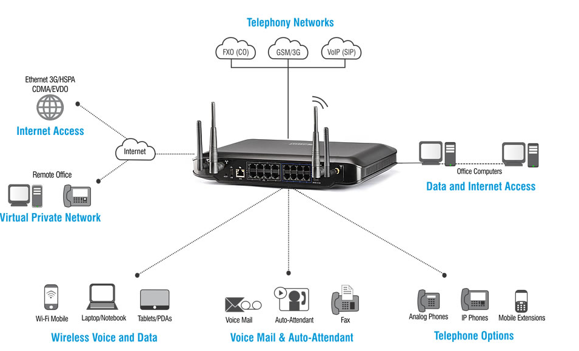

Soluciones IntegralesCALTEC ha implementado con 100% de éxito sistemas de comunicaciones basados en fibra óptica, microondas, etc.Tenemos múltiples casos de éxito, entre ellos la integración de las plantas de nuestro cliente Pesquera Diamante a lo largo de la costa peruana. Asimismo, radioenlaces de más de 20 Km para la Petrolera BPZ Energy y la instalación de más de 80 Km de redes de fibra óptica para varias empresas mineras. CALTEC también ofrece plataformas de comunicación para sistema de telemetría y control (SCADA). Algunos de los casos de éxito son la interconexión de los tanques de agua de Sedapal y la implementación de los radioenlaces para TGP (Transportadora de Gas del Perú). CALTEC promociona y vende los equipos PACKETLIGHT NETWORKS, de gran performance para sistemas de fibra óptica. |
|  | ||
|---|---|---|
Wireless ControllersSistema centralizado de control y gestión de Access Point (AP). Provisión y configuración remota de hasta 250 APs que se encuentran instalados en distintos lugares a través de un solo dispositivo. Capacidad de diseño en sistema redundante 1+1. |
Data Center AccessDiseño de Data Center de alta capacidad de 40 Gbps con sistema de backbone sin bloqueo, redundante, full conexión, balanceo de carga bajo demanda para cualquier tipo de servicio y/o aplicación. |
All in One – Office in boxTodos los servicios (datos, voz y video) en un solo equipo para la oficina aplicado a las PyMES y SOHOs. |
Full Conectividad Remota – VPN IPSec/SSLInterconexión de redes LANs a través de acceso de internet de forma segura, soporte para acceso a intranets, base de datos y servidores. |
Aplicaciones End-to-EndDiversos dispositivos de red permite soportar diversas aplicaciones para las PyMES, seguridad perimetral a través de equipos Firewall, gestión y optimización de la red usando lan virtuales (VLAN) y acceso inalámbrico vía WiFi. |
Acceso de Alta Velocidad GPON OLT-ONTDispositivos para brindar acceso a internet de alta capacidad a través de enlaces de fibra óptica. Contamos con equipos remotos y centrales. |